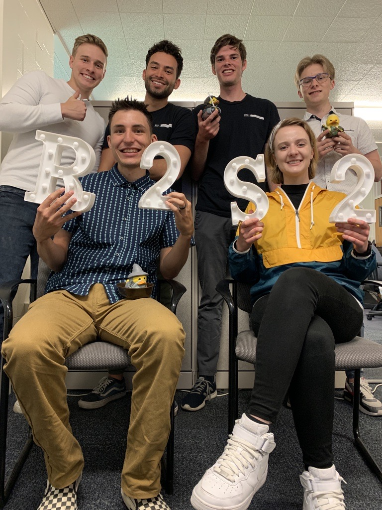

Support Center Analysis

The reports I made are used in financial decisions as well as policy decisions. I have built reports that are used by different departments around campus. This dashboards are used by different department heads as well as their reporesentatives and Support Center agents. I worked closely with a team of developers and programmers to wrangle data to then visualize and present it in a meaningful way.
I applied the business methods of the company, adjusting the measures for the need of the Support Center. As problem were rising, I was able to efficiently solve them with extenal tools such as R and Python embeded in Power BI. Our Power BI reports were connected with the university's data warehouse through our SQL Server Analysis Services. Big part of the data is gather in our CRM (TeamDynamix) which is connected to the SQL Server.
